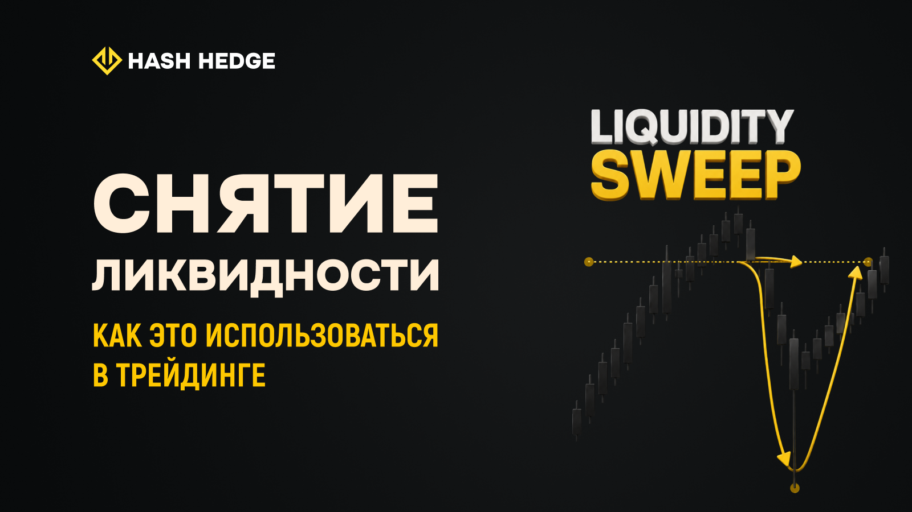

← Hash Hedge Blog
ЛОВУШКА ДЛЯ РОЗНИЧНЫХ ТРЕЙДЕРОВ: КАК ИНСТИТУЦИОНАЛЫ ИСПОЛЬЗУЮТ ВАШУ ЛИКВИДНОСТЬ
Снятие ликвидности в трейдинге (Liquidity Sweep): что это и как использовать

Содержание
1. Liquidity Sweep vs. Liquidity Grab vs. Stop Hunt
2. Как работают Liquidity Sweeps
3. Bullish и Bearish свипы: как отличить
4. Fair Value Gap как подтверждение
5. Как торговать Liquidity Sweep
6. Альткоины vs BTC и ETH
7. Свипы в проп-трейдинге
8. Мультитаймфреймный метод
FAQ
Liquidity Sweep vs. Liquidity Grab vs. Stop Hunt
В крипто-сообществе три термина часто используются как синонимы: liquidity sweep, liquidity grab и stop hunt. Хотя все они описывают схожее поведение рынка, между ними есть принципиальные различия.
Liquidity Sweep — цена пробивает важный уровень, активирует скопившиеся стоп-лоссы и разворачивается. Liquidity Grab — более широкое понятие: любое движение цены в зону высокой концентрации ордеров. Stop Hunt — целенаправленное движение к конкретной зоне ликвидности, где большинство трейдеров разместили стопы.
Характеристика
Liquidity Sweep
Liquidity Grab
Stop Hunt
Что происходит
Пробой ключевого уровня, активация стопов, разворот
Агрессивный спайк за уровень с немедленным возвратом
Целенаправленное движение к кластеру стоп-лоссов
Скорость
Умеренная, несколько свечей
Очень быстрая, 1–2 свечи
Может развиваться дольше
Типичный таймфрейм
Крупные TF: H4, D1
Любой TF, чаще M15–H1
Около важных уровней рынка
Подтверждение
Fair Value Gap (FVG), BOS/MSS
Пин-бар, поглощение
Сильный разворот с объёмом
Примеры в крипто
BTC/USDT, ETH/USDT на H4–D1
Волатильные альткоины
Перед выходом данных CPI или FOMC
Как работают Liquidity Sweeps
Ликвидность естественным образом накапливается там, где большинство трейдеров размещают стоп-лоссы. Это предсказуемые ценовые зоны: Equal Lows, Equal Highs, Swing High/Low, неоднократно протестированные поддержки и сопротивления.
В терминологии Smart Money эти зоны делятся на: BSL (Buy-Side Liquidity) — выше текущей цены, где шортисты держат стопы; SSL (Sell-Side Liquidity) — ниже текущей цены, где лонгисты держат стопы. На BTC/USDT пулы ликвидности лучше всего видны на H4 и D1.
Три этапа классического Liquidity Sweep:
1
Пробой
Цена подходит к зоне ликвидности и пробивает уровень. Скопившиеся стоп-лоссы срабатывают, временно увеличивая объём торгов.
2
Разворот
Разворотная свеча закрывается обратно выше пробитого уровня (бычий свип) или ниже него (медвежий свип). Это ключевой сигнал: пробой не удержался.
3
Displacement
Цена уходит от зоны ликвидности с сильным импульсом, часто оставляя позади Fair Value Gap (FVG). Именно displacement отличает настоящий свип от обычной консолидации у уровня.
Продолжительность зависит от таймфрейма. На D1 — от 2 до 5 свечей. На H4 — несколько часов или целый торговый день. На H1 и ниже — значительно быстрее, но рыночный шум резко возрастает.
Bullish и Bearish свипы: как отличить
Bullish Liquidity Sweep формируется, когда цена опускается ниже серии минимумов, активирует стопы лонгистов (SSL) и разворачивается вверх. На графике BTC/USDT это выглядит как длинный нижний фитиль на H4 со свечой, закрывающейся выше пробитой поддержки, после чего цена ускоряется вверх с сильным импульсом.
Bearish Liquidity Sweep — зеркальная ситуация. Цена уходит выше серии максимумов (BSL), активирует бай-стопы и стопы шортистов, затем разворачивается вниз. На ETH/USDT медвежьи свипы часто происходят после позитивных новостей: розничные трейдеры покупают пробой вверх — и оказываются в ловушке, когда цена быстро разворачивается.
Fair Value Gap как подтверждение Liquidity Sweep
После завершения liquidity sweep фаза displacement часто оставляет Fair Value Gap (FVG) — дисбаланс, созданный между фитилями трёх последовательных свечей. Рынок нередко возвращается к этим дисбалансам перед продолжением нового тренда.
Появление FVG сразу после свипа — дополнительное подтверждение того, что движение поддержано институциональным потоком, а не является случайной волатильностью. Свип + сильный displacement + чёткий FVG = значительно более высокая вероятность реального разворота.
Как торговать Liquidity Sweep
Самая распространённая ошибка — войти в сделку, как только цена пробивает ключевой уровень. В этот момент невозможно понять: это свип или продолжение тренда. Разворотную сделку можно рассматривать только после того, как разворотная свеча закрылась обратно за пробитый уровень.
Три ключевых сигнала подтверждения:
Объём: резкий рост в момент пробоя, затем снижение на разворотной свече — признак того, что институционалы завершили набор позиции.
Размер фитиля: длинный фитиль, закрытие свечи у максимума (бычий) или минимума (медвежий) — один из сильнейших сигналов отклонения цены.
Закрытие свечи: разворотная свеча должна чётко закрыться за пробитый уровень. Просто коснуться уровня недостаточно.
Постановка стоп-лосса: стоп всегда за экстремумом свипа. При бычьем свипе — ниже нижнего фитиля. При медвежьем — выше верхнего фитиля. Это логическая точка инвалидации сетапа.
Liquidity Sweeps в альткоинах vs BTC и ETH
На BTC/USDT и ETH/USDT свипы ликвидности, как правило, следуют классическому паттерну: чётко выраженные уровни ликвидности, достаточный объём торгов, чистые развороты с хорошим продолжением. Это обусловлено глубокой ликвидностью этих рынков — институционалы предпочитают биткоин и эфириум при наборе крупных позиций.
Альткоины с низкой капитализацией ведут себя иначе. Пулы ликвидности значительно меньше, свипы — агрессивнее. Цена может за несколько минут уйти на 5–10% за уровень и с такой же скоростью вернуться. Такие рынки сложнее торговать: непредсказуемое исполнение, высокий slippage, резкий рост волатильности после свипа.
Рекомендуется сначала освоить торговлю свипами на BTC/USDT и ETH/USDT, а затем постепенно переходить к альткоинам, уменьшая размер позиции для компенсации повышенной волатильности.
Торговля Liquidity Sweeps в проп-трейдинге
Торговля свипами ликвидности означает вход против краткосрочного импульса рынка. Если свип ещё не завершён, цена может продолжить движение в направлении пробоя и создать значительный убыток. На личном счёте это неприятно, но управляемо. В аккаунте проп-фирмы это может привести к нарушению лимита дневного дродауна.
В рамках двухэтапного челленджа Hash Hedge лимит дневного дродауна составляет 5%, максимальный общий дродаун — 10%. Если рискуешь 2% счёта на одну сделку, неудачный свип, как правило, управляем. Но риск в 4–5% на «очевидный» сетап способен опасно приблизить аккаунт к нарушению правил уже после одной убыточной сделки.
Мультитаймфреймный метод подтверждения
Один из наиболее эффективных способов повысить качество сделки — применять мультитаймфреймный анализ.
1
Определить пул ликвидности на старшем TF
Выявить зону ликвидности на H4 или D1.
2
Дождаться свипа
Ждать, пока liquidity sweep не произойдёт.
3
Переключиться на младший TF
Перейти на H1 или M15 и искать подтверждение смены рыночной структуры. Для бычьего сетапа — первый более высокий минимум. Для медвежьего — первый более низкий максимум.
4
Войти только после подтверждения структуры
Только после подтверждения смены структуры рынка рассматривать вход в сделку.
Такой подход значительно снижает количество ложных сигналов и делает сетапы на свипы ликвидности более надёжными в рамках жёстких правил риск-менеджмента проп-трейдинга.
FAQ
Чем liquidity sweep отличается от обычного пробоя уровня?
При обычном пробое цена преодолевает уровень и продолжает движение в том же направлении. При liquidity sweep цена пробивает уровень, активирует скопившиеся стоп-лоссы и затем разворачивается. Ключевое отличие — разворотная свеча закрывается обратно за пробитый уровень, а после этого начинается сильное импульсное движение в противоположную сторону.
Как определить, что свип завершён?
Свип считается завершённым, когда разворотная свеча закрылась обратно за пробитый уровень на том таймфрейме, где вы его идентифицировали. Например, если свип произошёл на H4 — ждите закрытия H4-свечи. После этого можно перейти на H1 или M15 для поиска точки входа.
Можно ли торговать свипы в проп-фирме?
Да, но с осторожностью. Свипы — сетапы с высоким потенциалом, но также с повышенным риском, так как вход происходит против краткосрочного импульса. В челлендже Hash Hedge лимит дневного дродауна — 5%, поэтому рекомендуется рисковать не более 1–2% на одну сделку и дожидаться полного подтверждения свипа.
На каких таймфреймах лучше торговать свипы?
Оптимально идентифицировать зоны ликвидности и сам свип на H4 или D1, а искать точку входа на H1 или M15. Это снижает количество ложных сигналов, которых значительно больше на мелких таймфреймах, и даёт чёткое логическое место для стоп-лосса.
Почему свипы на альткоинах опаснее?
Альткоины с низкой капитализацией имеют меньшие пулы ликвидности, поэтому свипы там значительно агрессивнее — цена может уйти на 5–10% за уровень и так же быстро вернуться. Исполнение менее предсказуемо, slippage выше, а волатильность после свипа резко возрастает. Рекомендуется сначала освоить паттерн на BTC/USDT и ETH/USDT.
Готовы торговать на капитале проп-фирмы?
Hash Hedge — #1 крипто проп-трейдинговая платформа. Получите фондирование до $150К и выводите до 90% прибыли в USDT прямо на свой кошелёк.